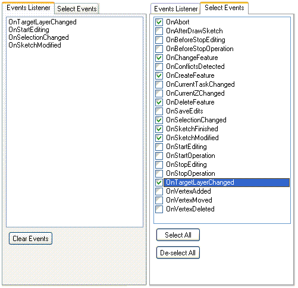

This sample provides the ability to understand when various edit events are fired in response to changes in the editing environment or user actions. Using this sample can help you ascertain which events are appropriate to listen for in various situations, and understand what causes a given event to fire.

Screen shot showing the Events Listener and Select Events tabs.
| Development licensing | Deployment licensing |
|---|---|
| Engine Developer Kit | Engine |
| ArcGIS for Desktop Basic | |
| ArcGIS for Desktop Standard | |
| ArcGIS for Desktop Advanced |